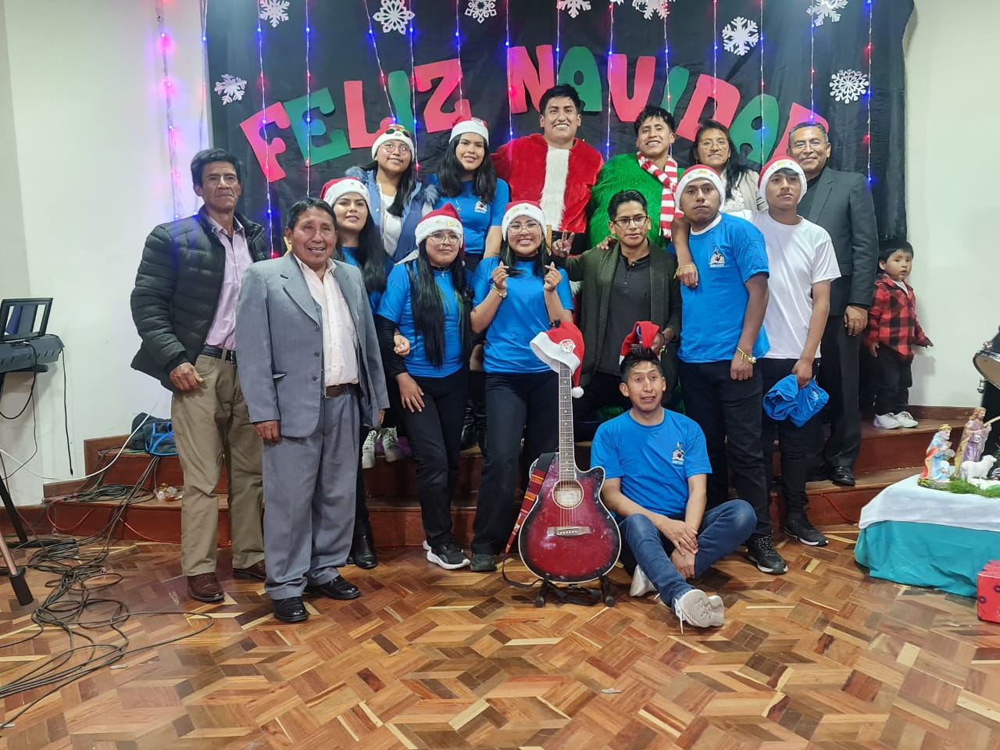
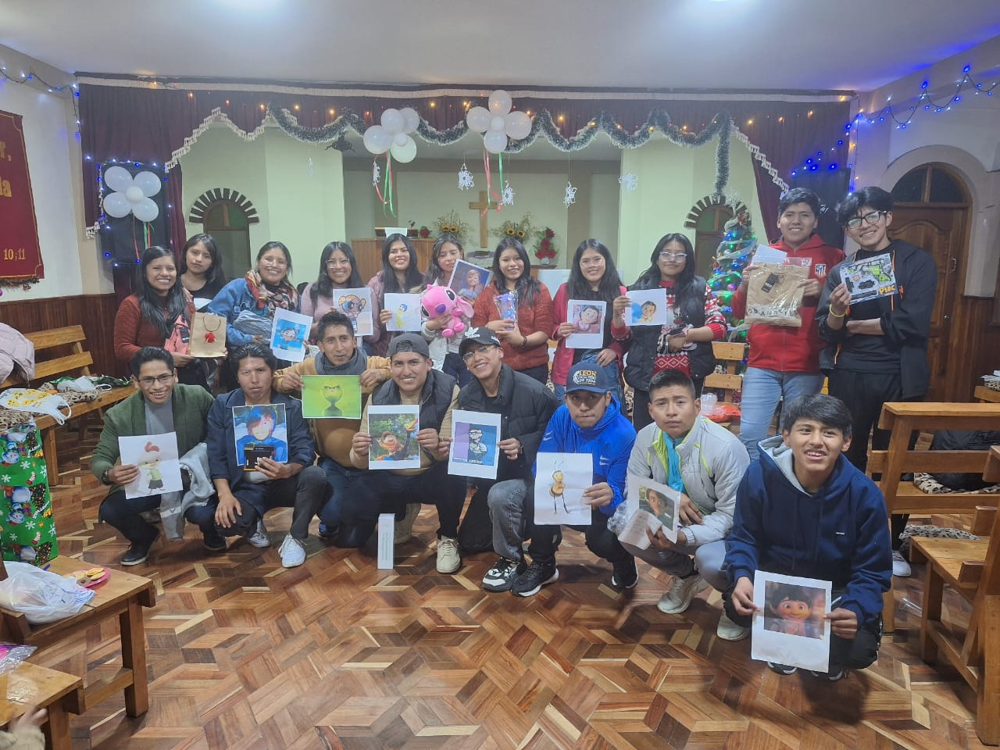
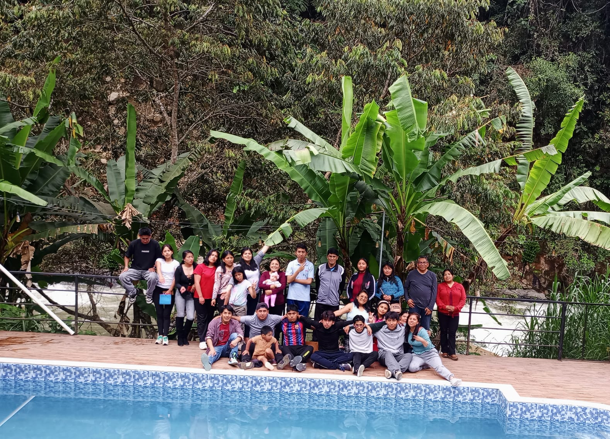
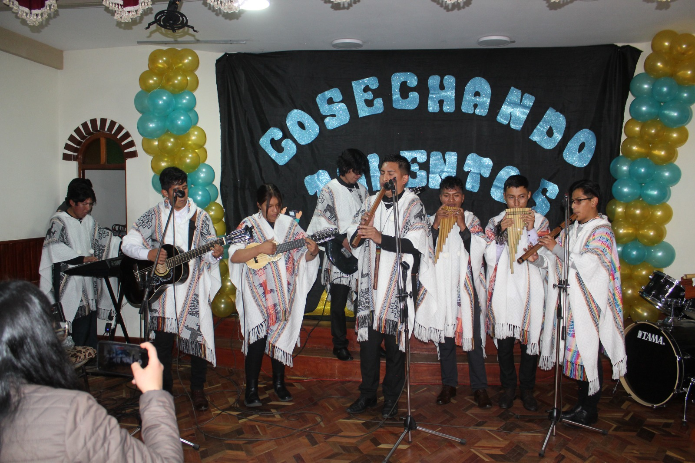
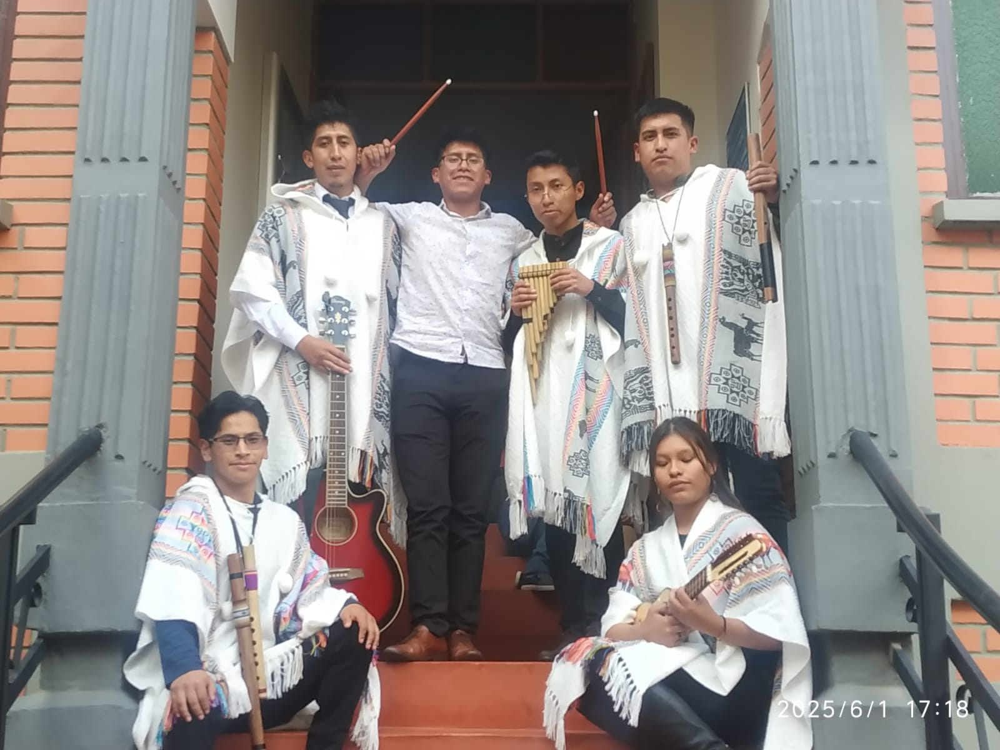

Un legado de fe, gracia y perseverancia desde nuestros inicios.

La Iglesia Evangélica Luterana El Buen Pastor nació de una profunda necesidad de compartir el evangelio de la gracia. Todo comenzó hace décadas, cuando un pequeño grupo de familias se reunía en hogares particulares para orar, estudiar las Escrituras y fortalecer su fe, guiados por los principios de la Reforma.
Poco a poco, la semilla fue dando fruto. La congregación creció y la sala de aquella primera casa quedó pequeña frente al entusiasmo de una comunidad que deseaba adorar a Dios en unidad.
Con mucho esfuerzo, oraciones y el apoyo incondicional de los hermanos, logramos levantar nuestro actual templo. Este edificio no es solo una estructura de ladrillos, sino un refugio espiritual donde generaciones han sido bautizadas, matrimonios han sido bendecidos y almas han encontrado consuelo.
Hoy, seguimos caminando con la misma visión de nuestros fundadores: ser una iglesia viva, fundamentada en la Palabra, que sirve a su ciudad y refleja el amor inagotable del Buen Pastor.

Involúcrate y crece con nosotros en tu área de interés.

Un espacio vibrante para que los jóvenes conecten, estudien la Biblia y disfruten de actividades diseñadas para su edad.
Saber más
Enseñamos los valores del reino a los más pequeños a través de juegos, manualidades y lecciones bíblicas divertidas.
Saber más
Acompañamos a la congregación a adorar a Dios con excelencia a través de la música, coros e instrumentos.
Saber más"Yo soy el buen pastor; el buen pastor su vida da por las ovejas."